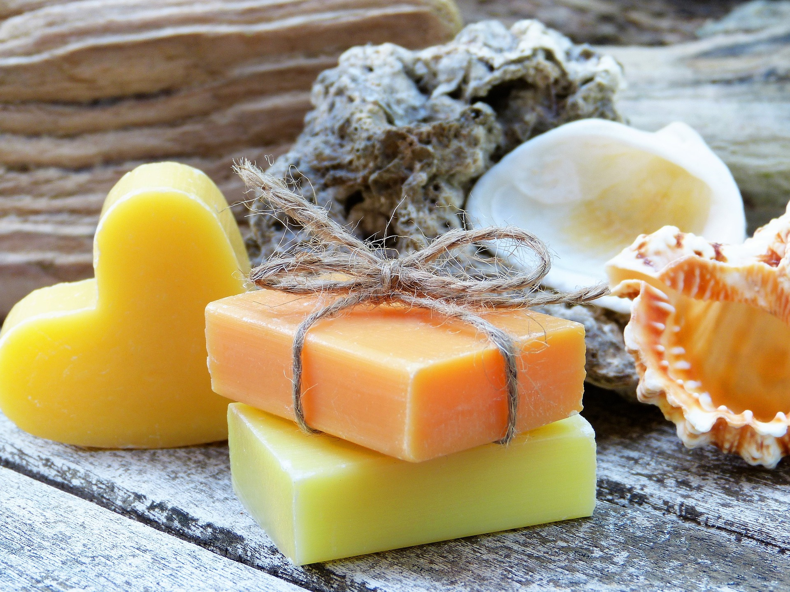
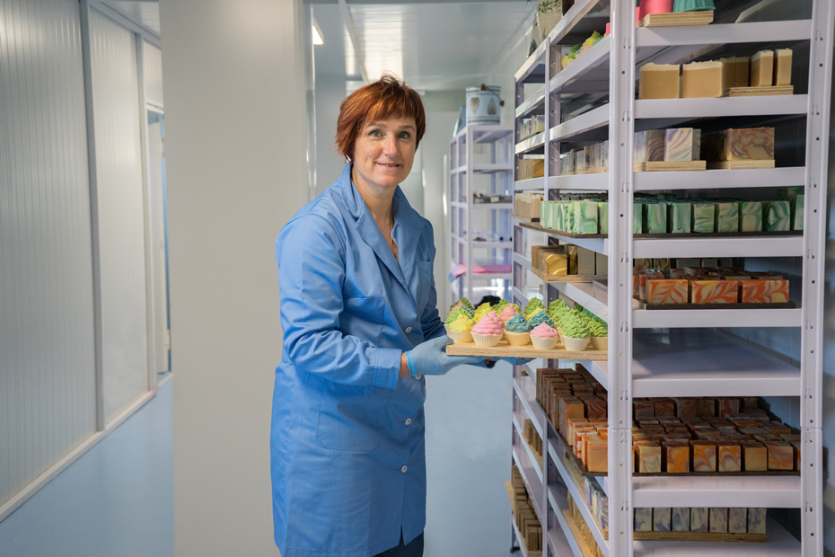

Somos HARA Artesanal, un emprendimiento peruano creado en el año 2020 por una mujer emprendedora, con la visión de ofrecer productos únicos y hechos a mano. Nos especializamos en la elaboración de jabones y velas artesanales, diseñados con dedicación, ingredientes naturales y un profundo respeto por el bienestar y el medio ambiente. Nuestro compromiso es brindar experiencias sensoriales que promuevan el autocuidado, el equilibrio y la armonía en cada rincón del hogar. Creemos que pequeños detalles pueden transformar grandes momentos. Con cada creación, buscamos transmitir amor, calidez y autenticidad. HARA no es solo una marca, es una forma de vivir lo natural, lo artesanal y lo hecho con el corazón.

Ser reconocida como una marca referente en el mercado artesanal peruano, destacando por la calidad, autenticidad y calidez de nuestros jabones y velas artesanales. Aspiramos a expandirnos manteniendo siempre nuestra esencia natural, promoviendo el bienestar emocional y físico de nuestros clientes, y creando experiencias memorables a través de cada producto. Queremos llegar a más hogares, inspirando a las personas a reconectarse con lo simple, lo natural y lo hecho con amor.

Brindar productos artesanales de alta calidad, elaborados con ingredientes naturales y procesos responsables, que promuevan el cuidado personal, el bienestar y el equilibrio emocional. En HARA Artesanal, nos comprometemos a ofrecer jabones y velas hechos a mano que inspiren a cada persona a dedicarse un momento de calma, amor propio y conexión consigo misma. Nuestra misión es generar experiencias sensoriales únicas que reflejen autenticidad, cercanía y el valor de lo hecho con dedicación y corazón.